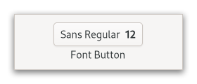

Gtk.FontDialogButton¶
Example¶
- Subclasses
None
Methods¶
- Inherited
Gtk.Widget (181), GObject.Object (37), Gtk.Accessible (15), Gtk.Buildable (1)
- Structs
class |
|
|
|
|
|
|
|
|
|
|
|
|
|
|
|
|
|
|
|
|
|
|
|
|
Virtual Methods¶
Properties¶
- Inherited
Name |
Type |
Flags |
Short Description |
|---|---|---|---|
r/w/en |
|||
r/w/en |
|||
r/w/en |
|||
r/w/en |
|||
r/w/en |
|||
r/w/en |
|||
r/w/en |
Signals¶
- Inherited
Name |
Short Description |
|---|---|
Emitted when the font dialog button is activated. |
Fields¶
- Inherited
Class Details¶
- class Gtk.FontDialogButton(**kwargs)¶
- Bases
- Abstract
No
- Structure
The
GtkFontDialogButtonis wrapped around a [class`Gtk`.FontDialog] and allows to open a font chooser dialog to change the font.An example
Gtk.FontDialogButtonIt is suitable widget for selecting a font in a preference dialog.
- CSS nodes
`` fontbutton ╰── button.font
╰── [content]
GtkFontDialogButtonhas a single CSS node with name fontbutton which contains a button node with the .font style class.New in version 4.10.
- classmethod new(dialog)[source]¶
- Parameters
dialog (
Gtk.FontDialogorNone) – theGtkFontDialogto use- Returns
the new
GtkFontDialogButton- Return type
Creates a new
GtkFontDialogButtonwith the givenGtkFontDialog.You can pass
NULLto this function and set aGtkFontDialoglater. The button will be insensitive until that happens.New in version 4.10.
- get_dialog()[source]¶
- Returns
the
GtkFontDialog- Return type
Returns the
GtkFontDialogof self.New in version 4.10.
- get_font_desc()[source]¶
- Returns
the font
- Return type
Returns the font of the button.
This function is what should be used to obtain the font that was chosen by the user. To get informed about changes, listen to “notify::font-desc”.
New in version 4.10.
- get_font_features()[source]¶
-
Returns the font features of the button.
This function is what should be used to obtain the font features that were chosen by the user. To get informed about changes, listen to “notify::font-features”.
Note that the button will only let users choose font features if [property`Gtk`.FontDialogButton:level] is set to
GTK_FONT_LEVEL_FEATURES.New in version 4.10.
- get_language()[source]¶
- Returns
the language
- Return type
Returns the language that is used for font features.
New in version 4.10.
- get_level()[source]¶
- Returns
the level of detail
- Return type
Returns the level of detail at which this dialog lets the user select fonts.
New in version 4.10.
- get_use_font()[source]¶
- Returns
whether the selected font is used in the label
- Return type
Returns whether the selected font is used in the label.
New in version 4.10.
- get_use_size()[source]¶
- Returns
whether the selected font size is used in the label
- Return type
Returns whether the selected font size is used in the label.
New in version 4.10.
- set_dialog(dialog)[source]¶
- Parameters
dialog (
Gtk.FontDialog) – the newGtkFontDialog
Sets a
GtkFontDialogobject to use for creating the font chooser dialog that is presented when the user clicks the button.New in version 4.10.
- set_font_desc(font_desc)[source]¶
- Parameters
font_desc (
Pango.FontDescription) – the new font
Sets the font of the button.
New in version 4.10.
- set_font_features(font_features)[source]¶
-
Sets the font features of the button.
New in version 4.10.
- set_language(language)[source]¶
- Parameters
language (
Pango.LanguageorNone) – the new language
Sets the language to use for font features.
New in version 4.10.
- set_level(level)[source]¶
- Parameters
level (
Gtk.FontLevel) – the level of detail
Sets the level of detail at which this dialog lets the user select fonts.
New in version 4.10.
Signal Details¶
- Gtk.FontDialogButton.signals.activate(font_dialog_button)¶
- Signal Name
activate- Flags
- Parameters
font_dialog_button (
Gtk.FontDialogButton) – The object which received the signal
Emitted when the font dialog button is activated.
The
::activatesignal onGtkFontDialogButtonis an action signal and emitting it causes the button to pop up its dialog.New in version 4.14.
Property Details¶
- Gtk.FontDialogButton.props.dialog¶
- Name
dialog- Type
- Default Value
- Flags
The
GtkFontDialogthat contains parameters for the font chooser dialog.New in version 4.10.
- Gtk.FontDialogButton.props.font_desc¶
- Name
font-desc- Type
- Default Value
- Flags
The selected font.
This property can be set to give the button its initial font, and it will be updated to reflect the users choice in the font chooser dialog.
Listen to
notify::font-descto get informed about changes to the buttons font.New in version 4.10.
- Gtk.FontDialogButton.props.font_features¶
- Name
font-features- Type
- Default Value
- Flags
The selected font features.
This property will be updated to reflect the users choice in the font chooser dialog.
Listen to
notify::font-featuresto get informed about changes to the buttons font features.New in version 4.10.
- Gtk.FontDialogButton.props.language¶
- Name
language- Type
- Default Value
- Flags
The selected language for font features.
This property will be updated to reflect the users choice in the font chooser dialog.
Listen to
notify::languageto get informed about changes to the buttons language.New in version 4.10.
- Gtk.FontDialogButton.props.level¶
- Name
level- Type
- Default Value
- Flags
The level of detail for the font chooser dialog.
- Gtk.FontDialogButton.props.use_font¶
- Name
use-font- Type
- Default Value
- Flags
Whether the buttons label will be drawn in the selected font.